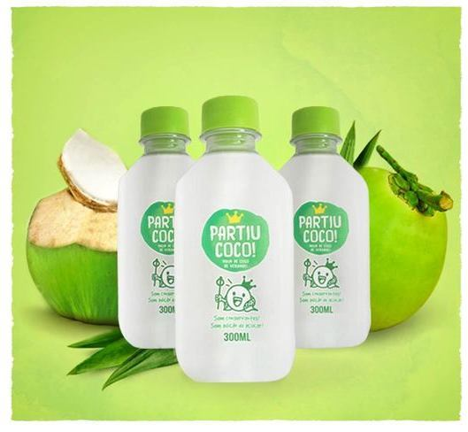

Bá Kombucha! Deliciosa bebida milenar, naturalmente gaseificada, frisante e com sabor de frutas.
*Vegano
*Sem Conservantes

Água de coco de verdade! O nome já diz tudo, "Partiu coco", O coco é partido e a água congelada, o que garante a preservação dos nutrientes. Sem conservantes, sem adição de açúcar, sem aditivos químicos e não pasteurizada.
*Vegano
*Sem Conservantes

Os sucos Fit Up são prensados a frio garantindo um produto de alta qualidade. Sua extração se dá por meio de uma prensa hidráulica que tira todo o líquido das frutas, legumes e hortaliças até a última gota. Este processo garante a conservação integral dos nutrientes como se ele tivesse sido feito na hora, garantindo também seu gosto natural e também a saciedade imediata da sua fome. É uma excelente opção para aumentar o consumo de verduras e legumes na dieta acrescentando vitaminas e minerais, importantes para a nossa saúde. Unindo as propriedades dos alimentos, com a praticidade, essenciais para vencer a correria do dia a dia.
*Vegano
*Sem Conservantes

Leite de coco em pó. Perfeito para quem quer diminuir o consumo de leite de origem animal. Pode ser usado em sucos, shakes, café, receitas doces ou salgadas. Extraído do leite de coco fresco, o pacote rende 10 copos de 250 ml.